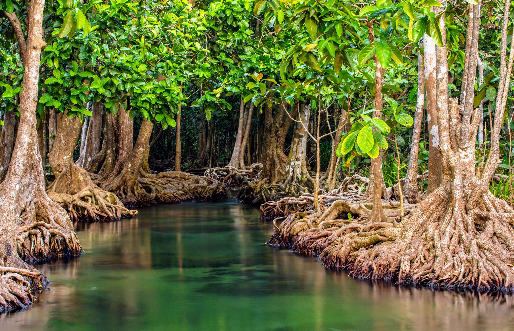

🛡️
1. Penahan Abrasi
Akar mangrove yang rapat dan menjalin bagaikan pagar hidup. Akar itu memperlambat gelombang dan menahan lumpur sehingga garis pantai tidak mudah terkikis.
Sumber: Journal.unnes
Setelah melihat betapa parahnya kondisi laut, ada kabar baik: pesisir kita punya penjaga alami yang bekerja tanpa henti.
Mangrove atau hutan bakau adalah hutan yang tumbuh di perbatasan antara darat dan laut, tepat di tempat air asin dan air tawar bertemu. Pohonnya tahan genangan air laut yang naik-turun setiap hari. Indonesia punya sekitar 3,39 juta hektare mangrove, sekitar 21% dari total mangrove dunia.

Sumber: Katadata (mengutip Peta Mangrove Nasional KLHK 2022), 2023
Kenapa mangrove pantas disebut superhero pesisir?
Akar mangrove yang rapat dan menjalin bagaikan pagar hidup. Akar itu memperlambat gelombang dan menahan lumpur sehingga garis pantai tidak mudah terkikis.
Sumber: Journal.unnes
Hutan mangrove menjadi tempat berlindung dan berkembang biak bagi ikan, udang, dan kepiting. Ekosistemnya mendukung produksi perikanan dan daur ulang unsur hara.
Mangrove tergolong hutan paling kaya karbon di daerah tropis: rata-rata sekitar 1.023 ton karbon per hektare, tersimpan terutama di dalam tanahnya. Menjaga mangrove berarti ikut menahan perubahan iklim.
Jalinan akar menjebak lumpur dan sebagian bahan pencemar dari daratan sebelum mencapai laut, sehingga air pesisir lebih bersih.
Sumber: poltar.iucn.org
Warga pesisir memperoleh penghasilan dari kepiting, ikan, wisata mangrove, dan produk olahan dari buah atau daun mangrove.
Sumber: pemsea.org
Tiga fakta yang bikin kamu makin respek sama mangrove.
Mangrove hanya sekitar 0,7% dari luas hutan tropis, tetapi hilangnya mangrove menyumbang hingga sekitar 10% emisi karbon akibat deforestasi dunia.
Sumber: Donato dkk., 2011
Indonesia memiliki sekitar 21% mangrove dunia, menjadikannya salah satu pemilik hutan mangrove terluas di dunia.
Sumber: KLHK via Katadata, 2023
Peta Mangrove Nasional 2021 mencatat luas mangrove Indonesia 3.364.080 hektare, bertambah 52.835 hektare dibanding pendataan sebelumnya.
Sumber: Mongabay Indonesia, 2021
Jenis mangrove tumbuh berlapis sesuai seberapa dekat dengan laut.
Paling dekat laut, kena ombak langsung. Dihuni jenis perintis seperti api-api dan pedada.
Didominasi bakau (Rhizophora) dengan akar tunjang yang kokoh.
Tanah lebih padat dan jarang tergenang. Banyak ditumbuhi tancang (Bruguiera).
Berbatasan dengan daratan atau tepi sungai, misalnya nipah dan tumbuhan darat.
Sumber: Journal.unsrat
Lihat bedanya kalau pesisir punya (atau kehilangan) penjaganya.
Kamu tidak perlu menanam mangrove sendiri untuk ikut menjaga pesisir. Mulai dari hal kecil, dampaknya bisa besar.
Lihat Panduan Aksi →